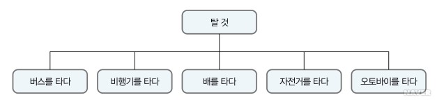
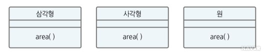

다형성
1. 다형성의 개념
다형성(polymorphism)이라는 단어는 원래 '여러 개의 형태를 갖는다'라는 의미의 그리스어에서 유래했다.
또 사전에서 찾아보면 poly(하나 이상), morph(형태)가 합성된 단어로 '하나 이상의 형태'를 뜻한다.
다형성의 개념이 적용된 몇 가지 일상 예를 통해 그 의미를 좀 더 명확히 이해한 후,
객체지향에서 다형성의 개념이 적용된 두 가지 형태인 오버로딩(overloading)과 오버라이딩(overriding)에 대해 살펴보자.
오버로딩은 메서드 중복 정의, 오버라이딩은 메서드 재정의를 뜻한다.
다음의 네 가지 예에서 보면, 하나의 행위('타다', '+', '면적을 계산하다', '열다')가 결과를 여러 개 만들어낸다.
이는 프로그램 측면에서 같은 메시지('타다', '+' 연산자, '면적을 계산하다', '열다')에 대해 이 메시지를 수신하는 객체마다 다르게 행동하는 것을 의미한다.
그리고 똑같은 + 기호가 다른 용도로 사용되는 것처럼 동일한 메서드 이름을 사용하지만 메서드에 대해 클래스마다 모두 다르게 구현되는 개념이 다형성이다.
■다형성의 예 1
다음 그림에서 공통점은 무엇일까? 수단은 다르지만 뭔가를 '타다'라는 동사가 동일함을 알 수 있다.

■다형성의 예 2
C 언어에서 + 기호는 다음 두 가지 용도로 사용된다.
• 연산자(operator) : 두 수를 더하는 연산자로, '3+5' 형태로 사용된다.
• 연결자(concatenation) : 문자열을 연결하는 역할을 하며 'go+stop' 형태로 사용된다.
■다형성의 예 3
'삼각형 면적을 계산한다', '사각형 면적을 계산한다', '원 면적을 계산한다'의 문장에서 공통점은 무엇인가? 바로 '면적을 계산한다'이다.

■다형성의 예 4
표현은 같지만 다른 행동을 하는 예로, '열다'가 있다. '창문을 열다', '지갑을 열다', '파일을 열다', '은행 계좌를 열다'와 같이 다양한 의미로 사용된다.
위의 예처럼 다형성은 이름이 같은 메서드가 사용하는 객체에 따라 다르게 동작하는 것을 의미하며,서로 다른 구현(코드)을 제공한다.
예를 들어, '다형성 예 3'에서 모든 도형에 대해 면적을 구하는 메서드 이름은 모두 동일하지만 이 메서드를 구현하는 부분에서는 다음과 같이 각기 다른 공식을 사용하게 된다.
표 6-4 도형에 따라 달라지는 면적 공식
| 도형 |
면적을 구하는 메소드 |
면적을 구하는 공식 |
| 삼각형 |
area() |
밑변×높이÷ |
| 사각형 |
area() |
가로×세로 |
| 원 |
area() |
반지름&ht2 |